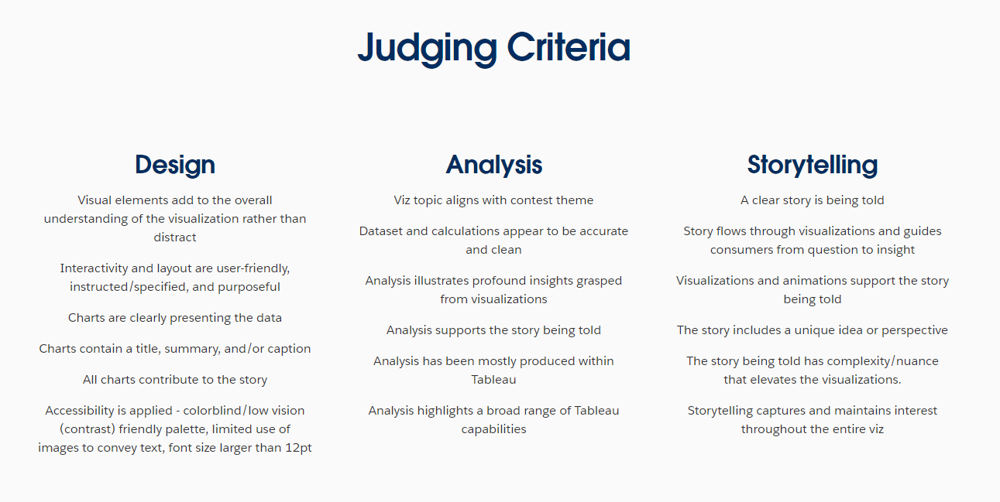
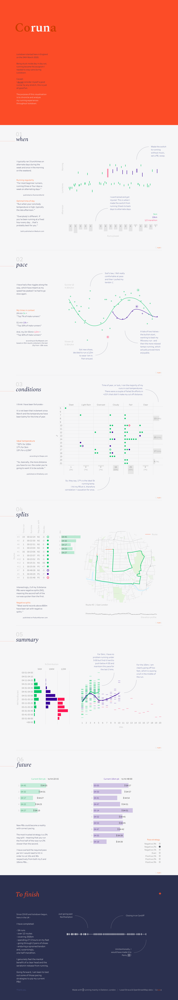
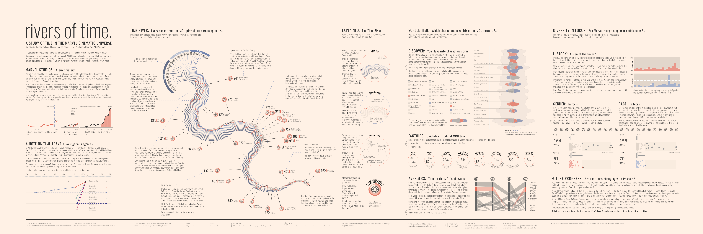
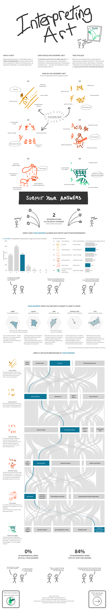
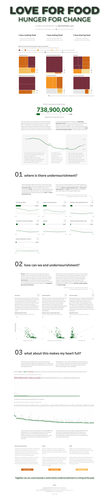
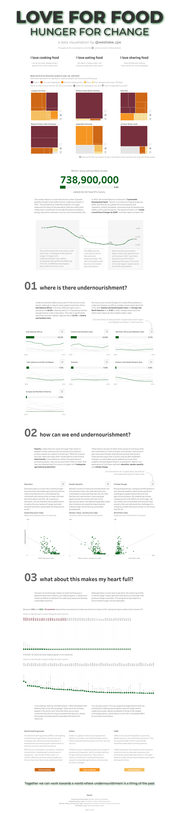
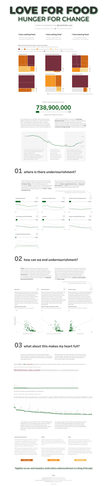

Hi all,
Hope everyone is doing well. I just got back from a wonderful holiday break which included turning my emails and teams notifications off. Wow, it was refreshing. We often forget that working in data isn't life or death, and whilst we love data - that time away with friends, family, and not 12 hours in front of a computer each day, is much needed time off. That time also gave me some moments of reflection on some current on-going community activities.
As most of you are aware it is Iron Viz "season" - with the competition closing in around a weeks time. Having been fortunate enough to present on stage and wear one of the awesome black chef jackets, the competition holds a soft spot in my heart.
The competition has become more transparent in recent years around what the definition of a "good" entry looks like. You can read what that looks like in terms of design, analysis and storytelling below.

For my blog today, I thought we could look at some of the previous years finalists entrants, and comment on a few stand out elements that really helped elevate their visual. (Not all of them will have impacted their final score, I only include the screenshot above as a reference point)
The things I call out below within the visuals are just my opinion on what makes that viz stand out to me, and will of course include some technical elements that aren't necessarily included in marking!
The gallery is the best place to start.
It goes back to 2011. For today, we will take just the last 5 years. Lets start with 2020.
Alex Jones - Coruna

Alex's coruna viz was one I saw when I was first joining the online community. The bold title making for a wonderful thumbnail, then with the offset of more toned down subtle colouring. The high contrast between text and background, along with clear labeling, enhances readability and accessibility.
Alex's visual has clear hierarchy. (Title, when, pace, conditions, splits, summary, future, to finish) to organize information logically, guiding the viewer through the data.
I really enjoy Alex's balance of story and context to each visual, such as the half marathon attempt with the new shoes, but how that stand out effort gets carried through to future charts to know it was 10 degrees at the time, and the adjustment in pace needed for a longer distance.

2021 was then round the corner, and out came this masterpiece from Sam Parsons "River of Time"
Sam has done a wonderful job of creating a visual metaphor. The central "river" graphic cleverly represents the flow of time in the Marvel Cinematic Universe, reinforcing the title concept and providing an intuitive way to understand the timeline.
Now, of course, technical skill isn't part of the contest, but I have much admiration for the detail that will have gone into some of the chart types like the curved chart with line and shape overlay. The streamgraph chart and the parallel bars with polygon join.
Sam's visual was one that broke the trend of vertical longform, opting for a newspaper roll-out feel. The design follows a consistent grid, creating a sense of order and balance across the viz.
A clear favourite for many on Tableau public for years to come.
Next up was 2022, where I was fortunate enough to make the final. I've chatted before about my own visual in past years, so lets take this wonderful artistic take by Will Sutton - "Interpreting Art"

Wills choice for and-drawn style creates an approachable, engaging feel that fits well with the topic of art interpretation. I also love that the need for interactivity, instead of optional to be able to unlock the insights the user must put in options.
That artistic license of each drawing carries through the analysis, and for such as large visual it is important to remind the viewer of the reference point.
The act of comparison, make the visual more engaging and adds to the storytelling piece, in a fun, creative manner!
Brittany'swas my favourite visual from the 2023 feeder finalists.
A consistent color scheme is used throughout, with different colors representing various categories or types of games, aiding quick visual comprehension. Something about using the primary colours I felt associated well to the games theme, simple, almost child like?
Brittany concludes with a section encouraging the viewer to explore and choose games based on their preferences, making the information actionable. You'll see this call to action has become fairly popular in recent years. For me, this is a prime example of where it works well, due to its interactivity of filtering out other choices, but doesn't necessarily force you to go load an external site.
I also really enjoyed the personal touch. It wasn't over baring and is light. The inclusion of Brittany's personal experience with two winning games adds a relatable, human element to the design. Again, this personalisation is something that has become an added feature of recent visuals.
Finally its worth mentioning Brittany perfectly balances hand drawn images in a way that doesn't become over powering. Notice how they are hand drawn adding to the youthful games like feel, as oppose to opting for something like the image of a games box lid etc.

In 2024, Chris Westlake made Iron Viz royalty with his "Love For Food" visual - like many, going for the more standard long form. Each section has a numbered, question-based heading that guides the reader through the content. It helps dice up the visual, or draw attention to a newly posed question.
Chris utilises a new feature that year of dynamic zone visibility popping out additional context where needed. He cleverly balances what NEEDs to be on the page, vs added information if interested.
Chris uses various chart types (Treemaps, line graphs, scatter plots) to present data in an easily digestible format. Not everything has to be flashy, crazy, radial charts - especially when it comes to the Iron Viz competition. But when you do make these line and bar charts, the importance is heavily put on it's readability. For example, where Chris uses light grey to fade other lines into the background. Clean, elegant and quickly interpretable.
That's it a brief few words on what I particularly have liked in the last few years of entrants that made the Iron Viz final. Each year, new features, couples with a different theme and new entrants make for an exciting display of visuals. Good luck to those competing this year, and be sure to check out the full gallery for inspo.
LOGGING OFF,
CJ
 Brittany's was my favourite visual from the 2023 feeder finalists.
A consistent color scheme is used throughout, with different colors representing various categories or types of games, aiding quick visual comprehension. Something about using the primary colours I felt associated well to the games theme, simple, almost child like?
Brittany concludes with a section encouraging the viewer to explore and choose games based on their preferences, making the information actionable. You'll see this call to action has become fairly popular in recent years. For me, this is a prime example of where it works well, due to its interactivity of filtering out other choices, but doesn't necessarily force you to go load an external site.
I also really enjoyed the personal touch. It wasn't over baring and is light. The inclusion of Brittany's personal experience with two winning games adds a relatable, human element to the design. Again, this personalisation is something that has become an added feature of recent visuals.
Finally its worth mentioning Brittany perfectly balances hand drawn images in a way that doesn't become over powering. Notice how they are hand drawn adding to the youthful games like feel, as oppose to opting for something like the image of a games box lid etc.

In 2024, Chris Westlake made Iron Viz royalty with his "Love For Food" visual - like many, going for the more standard long form. Each section has a numbered, question-based heading that guides the reader through the content. It helps dice up the visual, or draw attention to a newly posed question.
Chris utilises a new feature that year of dynamic zone visibility popping out additional context where needed. He cleverly balances what NEEDs to be on the page, vs added information if interested.
Chris uses various chart types (Treemaps, line graphs, scatter plots) to present data in an easily digestible format. Not everything has to be flashy, crazy, radial charts - especially when it comes to the Iron Viz competition. But when you do make these line and bar charts, the importance is heavily put on it's readability. For example, where Chris uses light grey to fade other lines into the background. Clean, elegant and quickly interpretable.
That's it a brief few words on what I particularly have liked in the last few years of entrants that made the Iron Viz final. Each year, new features, couples with a different theme and new entrants make for an exciting display of visuals. Good luck to those competing this year, and be sure to check out the full gallery for inspo.
LOGGING OFF,
CJ
Brittany's was my favourite visual from the 2023 feeder finalists.
A consistent color scheme is used throughout, with different colors representing various categories or types of games, aiding quick visual comprehension. Something about using the primary colours I felt associated well to the games theme, simple, almost child like?
Brittany concludes with a section encouraging the viewer to explore and choose games based on their preferences, making the information actionable. You'll see this call to action has become fairly popular in recent years. For me, this is a prime example of where it works well, due to its interactivity of filtering out other choices, but doesn't necessarily force you to go load an external site.
I also really enjoyed the personal touch. It wasn't over baring and is light. The inclusion of Brittany's personal experience with two winning games adds a relatable, human element to the design. Again, this personalisation is something that has become an added feature of recent visuals.
Finally its worth mentioning Brittany perfectly balances hand drawn images in a way that doesn't become over powering. Notice how they are hand drawn adding to the youthful games like feel, as oppose to opting for something like the image of a games box lid etc.

In 2024, Chris Westlake made Iron Viz royalty with his "Love For Food" visual - like many, going for the more standard long form. Each section has a numbered, question-based heading that guides the reader through the content. It helps dice up the visual, or draw attention to a newly posed question.
Chris utilises a new feature that year of dynamic zone visibility popping out additional context where needed. He cleverly balances what NEEDs to be on the page, vs added information if interested.
Chris uses various chart types (Treemaps, line graphs, scatter plots) to present data in an easily digestible format. Not everything has to be flashy, crazy, radial charts - especially when it comes to the Iron Viz competition. But when you do make these line and bar charts, the importance is heavily put on it's readability. For example, where Chris uses light grey to fade other lines into the background. Clean, elegant and quickly interpretable.
That's it a brief few words on what I particularly have liked in the last few years of entrants that made the Iron Viz final. Each year, new features, couples with a different theme and new entrants make for an exciting display of visuals. Good luck to those competing this year, and be sure to check out the full gallery for inspo.
LOGGING OFF,
CJ